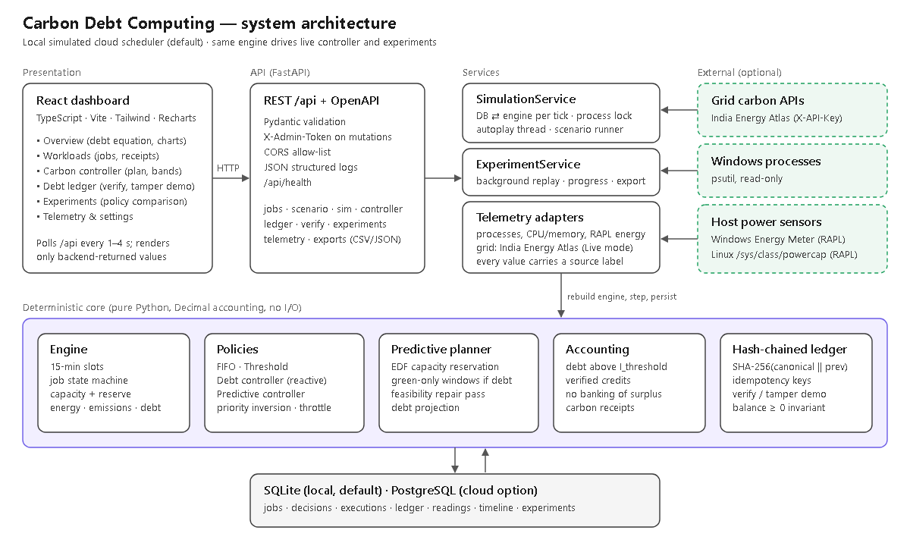
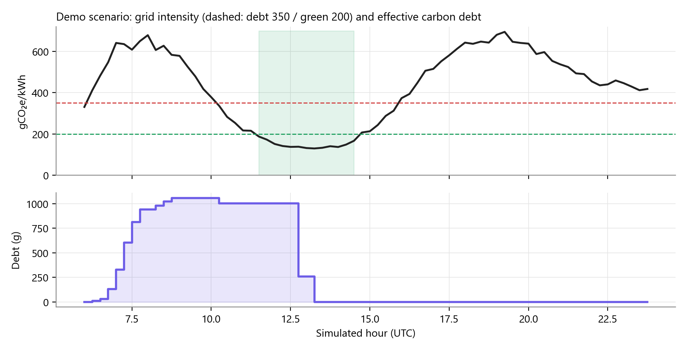

Emergency jobs, such as a hospital model failover or a flood-alert recompute, cannot wait for clean power. Carbon-aware schedulers defer flexible work, but they forget the unavoidable emissions and never make them up.
The demo scenario, computed by the backend: two morning emergencies at 550–650 gCO₂e/kWh create debt, which is repaid by 13:30 with no missed deadline.


| Policy | Emissions | Debt incurred | Final debt | Misses/run |
|---|---|---|---|---|
| FIFO | 20.6 kg | 5.38 kg | 5.38 kg | 0.2 |
| Threshold | 17.6 kg | 2.96 kg | 0.47 kg | 1.3 |
| Debt controller | 16.9 kg | 3.16 kg | 0.07 kg | 3.8 |
| Predictive | 17.2 kg | 2.88 kg | 0.25 kg | 1.3 |
Against FIFO, the predictive controller cut emissions by 16.7% and debt by 46.5%, with deadline misses equal to threshold deferral. Forecasting cut misses from 3.8 to 1.3 per run compared with the reactive controller. The price is delay for flexible work (~6.8 h on average).
Live mode: Indian grid intensity from India Energy Atlas, the Windows process list (psutil), and measured CPU-package energy from the Windows Energy Meter (Intel RAPL), shared to each job by CPU time.
FastAPI · SQLAlchemy · SQLite/PostgreSQL · React · TypeScript · Recharts. Decimal accounting, 76 automated tests, deterministic replay, Docker + Caddy HTTPS deployment.
Energy is estimated, the cluster is simulated locally, and the default grid curve is illustrative. Credits count avoided future emissions and never erase past ones. The hash chain is trustworthy only against an external head checkpoint.